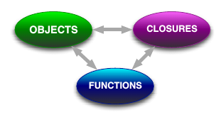
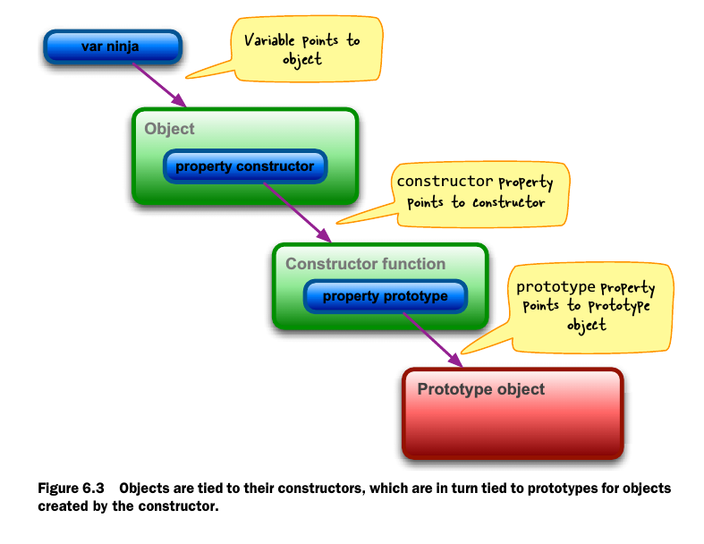
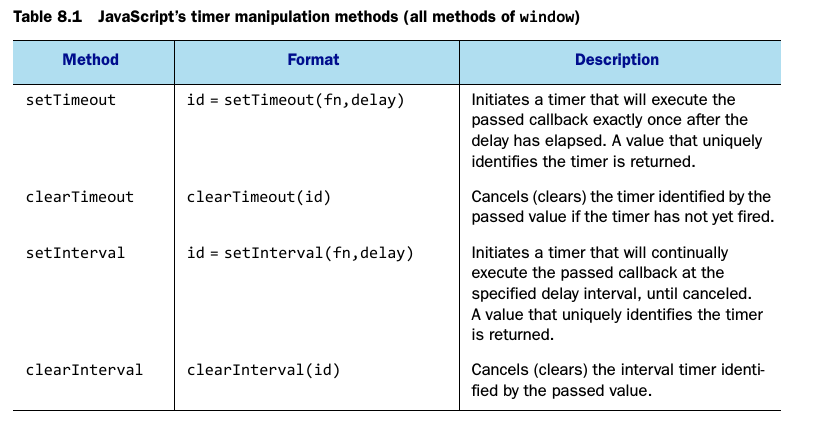

Enter the ninja
Javascript consists of a close relationship between objects, functions and closures. 
Arming with testing and debugging
function log() {
try {
console.log.apply(console, arguments);
}catch(e){
try{
opera.postError.apply(opera, arguments);
}catche(e){
alert(Array.prototype.join.call(arguments, " "));
}
}
}
Functions are fundamental
- The scope of declaration within a function differs from that of most other languages. Specifically:
- Variables within a function are in scope from their point of declaration to the end of the function, spanning block boundaries.
-
Inner named functions are available anywhere within the enclosing function, even as forward references.
-
The parameters list of a function and its actual argument list can be of different lengths:
- Unassigned parameters evaluate as undefined.
-
Extra arguments are simply not bound to parameter names.
-
Each function invocation is passed two implicit parameter names
- arguments, a collection of the actual passed arguments
-
this, a reference to the object of the object serving as the function context
-
Functions can be invoked in various ways, and the invocation mechanism determines the function context value:
- when invoked as a simple function, the context is the global object(window).
- When invoked as a method, the contect is the object owning the method.
- When invoked as a constructor, the context is a newly allocated object.
- When invoked via the apply() or call() methods of the function, the context can be whatever the heck we want.
Wielding functions
- Anonymous functions let us create smaller units of execution rather than large functions full of imperative statements.
- Functions can have properties and those properties can be used to store any information we might wish to use.
Closing in on closures
- Binding function context
- Partially applying functions
- Overriding function behavior
- Immediate function :::javascript (function(){})()
- Temporary scope and private variables
- Loops
- Library wrapping
Object-orientation with prototypes

Wrangling regular expressions
var re1 = /test/i;
var re2 = new RegExp("text", "i");
Taming threads and timers

Ninja alchemy:runtime code evaluation
- use
eval()to create runtime code evalution - Json conversion
- moving definitions between namespaces
- minimization and obfuscation of Javascript code
- dynamic code rewriting and injection
- creating metalanguages
With statements
- The use of
withshould be avoid.
Developing cross-browser strategies
- Reusable cross-browser development involves juggling three factors:
- Code size -- Keeping the file size small
- Performance overhead -- Keeping the performance level above a palatable minimum
- API quality -- Making sure that the APIs provided work uniformly across browsers
Cutting through attributes, porperties, and CSS
- Versions of IE prior to IE 9 don't allow the type attribute of <input> elements to be changed once the element is part of the DOM
- The style attribute poses some unique challenges and doesn't contain the computed style for the element
- Computed style can be fetched from the window using standardized API in modern browsers, and via a proprietary property on IE 8 and earlier
Surviving events
- addEventListener()
- removeEventListener()
Manipulating the DOM
- Injecting HTML into a page
- Cloning elements
- Removing elements
- Manipulating element text